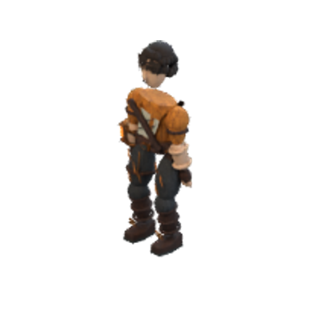
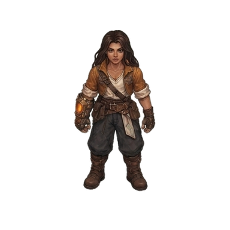
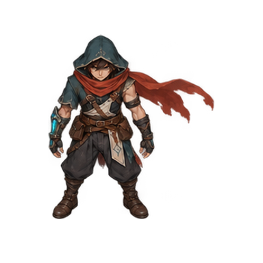
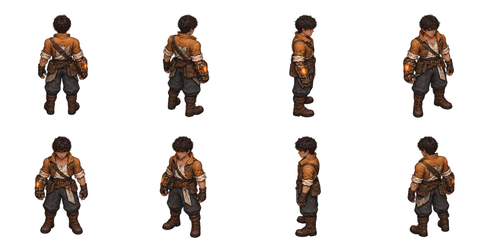

CHARACTER REDESIGN · 03
Ember WardenA spark worth protecting.
A frontier firekeeper, painted in the same visual language as Rift Runner. Worn ochre canvas, dark curls, weathered bronze, and a furnace that never quite goes cold.
01 / TURNAROUNDSOUTH EAST
Eight painted views · right-arm furnace gauntlet
02 / STYLE ALIGNMENT
One painted art direction.
Compare texture, outline weight, and material shading at the same display height.



03 / ACTION LANGUAGE
Four ways to carry the fire.
Painted key poses establish the look of each skill. Select a pose for a closer view.
04 / EIGHT DIRECTIONS
The complete turnaround.


Loading painted character…